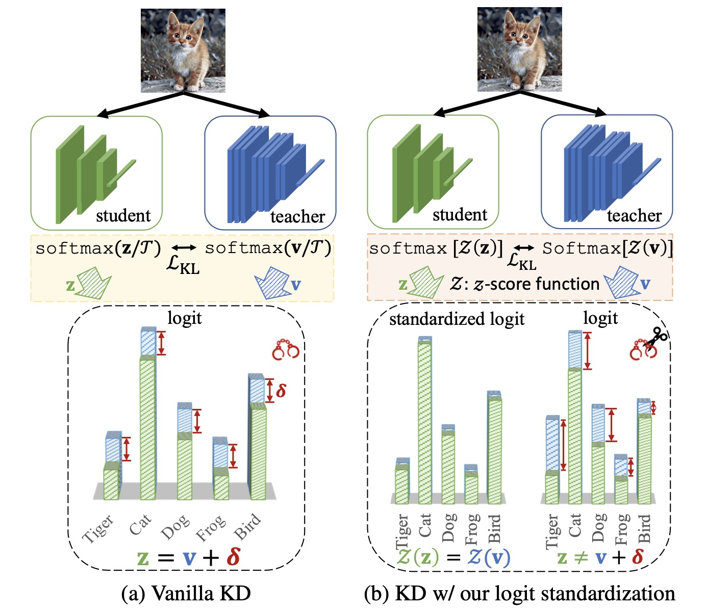
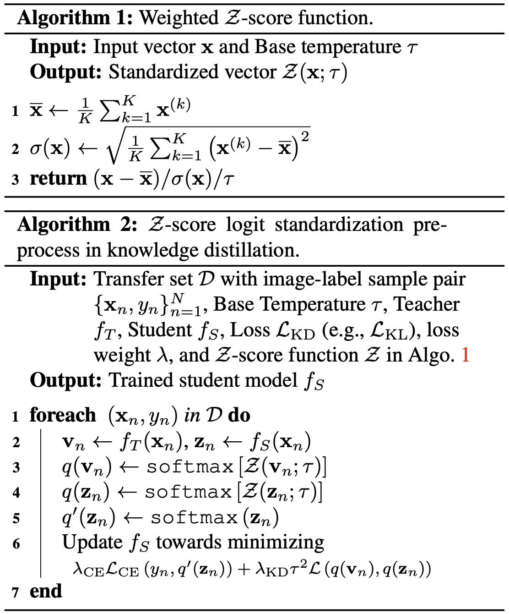

Method

Figure 1. Vanilla knowledge distillation implicitly enforces an exact match between the magnitudes of teacher and student logits. It is an unnecessary side-effect because it is found sufficient to preserve the innate relations between their logits. Given the capacity gap between them, it is also challenging for a lightweight student to produce logits with the same magnitude as a cumbersome teacher. In contrast, the proposed Z-score logit standardization pre-process mitigates the side-effect. The standardized student logits have arbitrary magnitude suitable for the student’s capacity while preserving the essential relations learned from the teacher.

Algorithm 1 & 2. The algorithm of the proposed logit standardization.